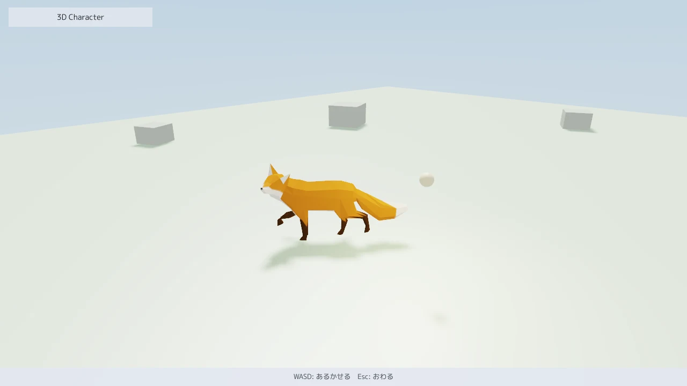
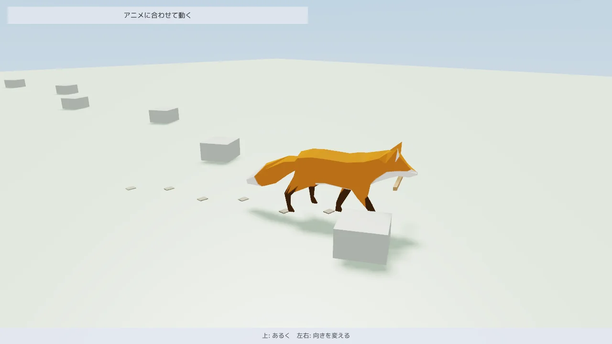

MitiruEngine
MitiruEngine
3D ACTION 2 / 6
キャラクターに動きを付ける
骨の入ったモデルを読み込み、待機・歩き・走りの切り替えを JSON に書き、頭を目標へ向け、足を段と坂に置きます。ゲームが当たり判定に使う骨と、画面に描く骨を一致させる仕組みもこのページで扱います。

anim3d。A と Shift で左へ走らせているところで、状態機械が歩きから走りへ混ぜています。キツネのモデルは Khronos が公開している glTF のサンプル (Fox) です。起動は mitiru_host.exe anim3d/anim3d.dll で、WASD で歩かせ、Shift を足すと走ります。全文はサンプル集にあります。サンプルのビルドの仕方と起動する場所は、1 ページ目の始め方にあります。
モデルを用意する
骨とアニメーションの入った .glb と .gltf をそのまま使えます。Blender の動作 (Action) の名前が、そのままクリップの名前になります。.fbx も渡せます。初回の読み込みで隣に .fbx.glb を作り、以後はそれを読みます。Mixamo の FBX はゲームに入れて配れますが、FBX のファイルそのものを再配布することはできません。
ゲームの DLL も、描画と同じファイルを読みます。loadAnimAssetFile で骨格とクリップを読み、AnimGraphFile で次の節の状態機械の JSON を読みます。どちらも作ったら変わらないので、DLL の static に置きます。
#include <mitiru/animation/AnimRuntime.hpp>
namespace anim = mitiru::animation;
constexpr const char* kFoxPath = "anim3d/assets/fox/fox.glb";
const anim::AnimAsset kFox = anim::loadAnimAssetFile(kFoxPath).value_or(anim::AnimAsset{});
anim::AnimGraphFile g_graph("anim3d/assets/fox/fox.animgraph.json", kFox);
const int kHead = kFox.findNode("b_Head_05");
待機・歩き・走りを JSON で切り替える
どの動きを再生し、何の条件で次の動きへ移り、何秒かけて混ぜるかは、モデルの隣の <名前>.animgraph.json に書きます。サンプルは待機 (Idle) と、速さで歩きと走りを混ぜる状態 (Move) の 2 つを持ち、速さの param が 0.2 を超えると 0.25 秒かけて移ります。
{
"params": [ { "name": "speed", "type": "float" } ],
"layers": [ {
"name": "body",
"entry": "Idle",
"states": [
{ "name": "Idle", "clip": "Survey" },
{ "name": "Move", "blend1d": { "param": "speed", "points": [ { "clip": "Walk", "at": 1.4 }, { "clip": "Run", "at": 3.6 } ] } }
],
"transitions": [
{ "from": "Idle", "to": "Move", "when": "speed > 0.2", "duration": 0.25, "curve": "smooth" },
{ "from": "Move", "to": "Idle", "when": "speed < 0.1", "duration": 0.35, "curve": "smooth" }
]
} ]
}
ゲームは毎フレーム param を書いて stepAnimGraph で状態機械を進め、描くときに animGraphPose で姿勢の入力 (AnimPoseParams) にします。状態機械の今 (AnimGraphState) は数字だけの小さな値なので、ゲームの状態に置けば巻き戻しで状態も姿勢も戻ります。
anim::AnimGraphState graph{}; // ゲームの状態に置く
// update
const anim::AnimGraph& g = g_graph.get();
anim::setAnimParam(graph, g.findParam("speed"), speed);
anim::stepAnimGraph(g, kFox, graph, dt);
// draw
anim::AnimPoseParams pose;
anim::animGraphPose(g_graph.get(), kFox, graph, pose);
const sgc::Mat4f world = sgc::Mat4f::translation({px, 0.0f, pz}) *
sgc::Mat4f::rotationY(deg(yawDeg)) * sgc::Mat4f::scaling({0.01f, 0.01f, 0.01f});
s.drawModelPose(kFoxPath, world, &pose, &look, 1); // look は次の節の IK の依頼
状態はクリップ 1 本のほか、param 1 つで混ぜる blend1d と 2 つで混ぜる blend2d を書けます。遷移の条件は "speed > 0.2"、"!grounded"、トリガーの "attack"、ループしない動きの終わりの "finished" などで、"from": "*" はどの状態からでも移ります。"window": [0.6, 0.9] を付けると、動きのその範囲でだけ移れる取り消しの窓になります。上半身だけの動きは骨のマスクを付けたレイヤに書き、足音や攻撃判定の印はイベントとして animEventFired で調べます。書式の全体は docs/ANIM_GRAPH.md にあります。
調整は遊びながら行います。mitiru_host.exe anim3d/anim3d.dll --watch-assets anim3d/assets で起動して JSON を保存すると、その場で読み直します。状態はゲームの側にあるので、歩いている途中に移る秒数を変えても止まりません。書き間違えたら前の JSON のまま動き、画面の上に理由が出ます。--inspect anim で開く窓には、今の状態、移っている途中の重み、param の値が名前で出ます。
頭を目標へ向ける
評価した姿勢には IK を掛けられます。AnimIkRequest の種類は 3 つです。腕や脚の先を目標へ届かせる 2 骨の IK (kAnimIkTwoBone)、骨を目標へ向ける IK (kAnimIkAim)、足を地面に置く IK (kAnimIkFoot) があります。サンプルは向ける IK で頭を光の玉へ向け、首が回る角度を 70 度までにしています。
// 頭の骨の「前」がどの軸かは骨ごとに違うので、読み込みの時に求めておく
const sgc::Vec3f kHeadForward = anim::restLocalAxis(kFox, kHead, {0.0f, 0.0f, 1.0f});
// 骨、目標 (ワールド座標)、骨の前、回せる角度の cos。首はいまの向きから 70 度まで
const anim::AnimIkRequest look = anim::AnimIkRequest::aim(kHead, b, kHeadForward, std::cos(deg(70.0f)));
2 骨の IK は AnimIkRequest::twoBone(根元, 中間, 先, 目標, 肘や膝を向ける点)、足の IK は AnimIkRequest::foot(股, 膝, 足首, 地面の高さ) で作ります。
足を段と坂に置く
アニメーションは平らな地面で作られているので、段や坂ではどちらかの足が浮くか埋まります。mitiru/action/FootPlacement.hpp は、1 ページ目の CollisionWorld へ両足の真下からレイを撃って地面の高さを測り、低い側の足が届くだけ体を下げ、足首をそれぞれの地面へ置く IK の依頼を 2 本作ります。足裏は地面の傾きに沿います。
namespace act = mitiru::action;
// update: IK を掛ける前の姿勢で地面を測り、足の高さと体を下げる量を少しずつ寄せる (feet はゲームの状態)
anim::evaluatePose(kHero, params, g_pose);
act::stepFootPlacement(feet, world, g_pose, placement, kLegs, act::FootPlacementConfig{}, dt);
// 当たり判定と描画で同じ依頼を使う
const act::FootPlacementPose fp = act::footPlacementPose(feet, placement, kLegs, act::FootPlacementConfig{});
s.drawModelPose(kHeroPath, fp.world, ¶ms, fp.ik, 2);
当たり判定に骨を使う
剣の当たり判定を出す時刻、武器を持たせる手の位置、攻撃で前へ踏み込む量は、ゲームの側で同じフレームに要ります。evaluatePose は描画と同じ計算で姿勢を出すので、DLL の中で呼べば画面の骨と同じ位置が手に入ります。使う演算は四則演算や平方根などに限ってあり、別の PC でリプレイしても同じビット列の姿勢になります。
// kHero は剣を持つキャラクターのモデル (kFox と同じく loadAnimAssetFile で読む)
static anim::AnimPose g_pose; // 計算の置き場。ゲームの状態の外に置く
anim::evaluatePose(kHero, pose, g_pose);
anim::applyIkRequests(kHero, g_pose, world, &look, 1); // 描画に渡すのと同じ IK
const sgc::Mat4f sword = anim::socketWorld(kHero, g_pose, kHero.findSocket("hand_r"), world);
ソケット (武器を付ける位置) とイベント (時刻つきの印) は、モデルの隣に置く <名前>.anim.json に書きます。glTF には時刻つきの印を入れる場所がないためです。hero.glb なら hero.anim.json になります。
{
"rootMotion": "Root",
"events": { "Slash": [ { "name": "hit_on", "time": 0.18 }, { "name": "hit_off", "time": 0.32 } ] },
"sockets": { "hand_r": { "bone": "Hand_R", "offset": [0, 0.1, 0], "rotation": [0, 0, 0, 1] } }
}
collectAnimEvents(asset, clip, 前の時刻, 今の時刻, loop, out, max) は、その間に通過したイベントを時刻順に返します。毎フレーム、前の時刻から今の時刻までを問えば、同じイベントを 2 回拾いません。攻撃で前へ出る動きは、pose.flags に kAnimPoseInPlace を付けて描画ではルートの骨を止め、動いた量を rootMotionDelta で取ってキャラクターの位置に足します。この量を stepCharacter に渡す速度へ含めれば、踏み込みも 1 ページ目の当たり判定を通るので、壁にめり込みません。

anim_events。前足が着くたびに足音が鳴って足跡が残り、進む距離は歩きのクリップの動きで決まります。枝は口のソケットに付いています。同梱サンプル anim_events は、この 3 つを 1 匹のキツネで使います。fox.anim.json に前足が着く時刻 (step_l / step_r)、口のソケット、進む骨を書き、歩きのクリップには前へ進む動きを焼き込んであります。向きは四元数のまま持つので、三角関数を使わず、別の PC でリプレイしても同じ足跡になります。
const float prevT = animT;
animT += dt;
// ルートモーション: この間に歩きの動きが進んだ量を、混ぜた重さの分だけ体に足す
const anim::YawXform step = anim::rootMotionDelta(kFox, kWalk, prevT, animT, true);
body = anim::composeYaw(body, {step.t * (kScale * walkMix), anim::quatNlerp(anim::kQuatIdentity, step.r, walkMix)});
// 描画と同じ姿勢を DLL の中で出し、口のソケットと前足の骨を同じフレームのうちに読む
anim::evaluatePose(kFox, pose(), g_pose);
stick = anim::socketWorld(kFox, g_pose, kMouth, world());
anim::AnimEventHit hits[4];
const int n = anim::collectAnimEvents(kFox, kWalk, prevT, animT, true, hits, 4);
for (int i = 0; i < n; ++i)
{
const int paw = (hits[i].nameId == kStepL) ? kLeftPaw : kRightPaw;
const sgc::Mat4f foot = anim::boneWorld(g_pose, paw, world()); // 足跡はこの足の真下に置く
hud.play("step", 0.6f * walkMix);
}
全文はサンプル集にあります。起動は mitiru_host.exe anim_events/anim_events.dll で、上で歩き、左右で向きを変えます。
別の骨格の動きを使う
Mixamo や市販のクリップは、骨の名前もレスト姿勢 (T ポーズか A ポーズか) も自分のモデルと違います。<名前>.anim.json の retarget に、クリップを持つファイルと骨の名前の対応表を書くと、読み込みの時にレスト姿勢の違いを補正して自分の骨格へ写します。写したクリップは元からあるクリップと同じように名前で使えます。ゲームの DLL と描画は同じ JSON から同じクリップを作るので、骨は一致したままです。
{
"retarget": [ { "source": "hero/anims/mixamo_run.fbx", "map": "hero/mixamo.bonemap.json", "clips": ["Run"], "prefix": "mx_" } ]
}
// hero/mixamo.bonemap.json
{ "root": "mixamorig:Hips", "bones": { "mixamorig:Hips": "pelvis", "mixamorig:Spine": "spine_01", "mixamorig:LeftArm": "upperarm_l" } }
使った部品の一覧は mitiru::animation の API リファレンスにあります。次のページでは、敵を置いて動かします。3. 敵を動かす